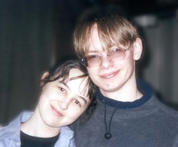

|
Jon "eVilAsmo" Bridges
July 19 1982 - January 6 2006

A biography he wrote on his personal website. Preserved here and via the Wayback Machine (jonbridges.coolerhosting.com).
A quick warning for those who didn't realise. This link would usually be entitled "boring stuff that no-one really cares about", but that didn't fit. With that in mind, go back to the panel on your left and
hit a different link.
If you're still reading, I guess you like boring stuff.
Huzzah \o/
The following mass of letters is all about me and my crazy life (cough). I'm really only doing this for the sake of those people, who, like I do when I see a body of work I enjoy, want to know about the
person who made it. This unfortunately includes a bit of ranting from me, especially on the grounds of ideology - as that often forms an important part of the reasoning behind even the most superficial image.
I guess if you're reading still, you aren't scared yet, there's still time...
Here goes, info bout me, starting with, 'now' I guess.
For the first time in my life I am out of education and looking for employment. Due to a number of things, I chose to withdraw from my New Media course in Manchester. The main reason for leaving was in fact
the interaction of two reasons. Initially, I didn't like the environment. In the space of a few Months I had my car both broken into, and stolen from college grounds (it was later written off). As such, I
felt I wasn't in the correct mindset to realise what was a very demanding course, and, a course that I felt was taking me in the wrong direction. I open with this, as I feel leaving it is the first positive
step I've made in quite some time.
All that said, and you still don't know who I am...
I'm a 19 year old male, currently living in Gloucester, in the county of Gloucestershire, South West England. The last year has been perhaps the biggest learning experience of my life. The first mere 3 months
away from home, in what felt like a different culture (even though it is only 3/4 hours drive away), taught me a hell of a lot. By this, I mean a lot about life, rather than new media (things like.. how much
parents did actually bend over backwards to help you at home even if you couldn't see it then, how keeping yourself alive is actually quite difficult on top of working/studying, and how much your friends and
loved ones actually mean to you). This brief stint in Manchester on the above course inspired in me the desire to work towards a career in producing something I genuinely enjoy producing, and perhaps more
importantly, taught me that in order to work optimally you must live adequately. For these reasons, I'm back home to begin my search for a group of people who share my interest in working to create a quality
game.
I've lived in the West Country all my life. I'm not tall, not small, with the physique of stick insect but more easily spotted in foliage. I have blonde/brown hair, which I hate getting cut, I wear glasses
(on a side note, I wear glasses with reactalite lenses that no longer work, so I live in a perpetual state of half tint \o/). I learned most of my basic "drawing" without glasses, something I've always
considered a boon, seeing blurs somehow makes still life drawing much more successful! I guess that's why the cries of teachers: "Don't think! Look!" always struck a chord. But now I am spectacled, as I have
been since secondary school, the brain has free range to warp my observations once again!
I have interests in a number of fields. My time is split mainly between two things, my interest in the computer/games, which I enjoy on both a recreational and creative level (skinning/mod concepts and
mapping) and spending time with my friends/family, and loved one. I've been a part of the online community since the days of Quake II (I was confined to a LAN since the Doom days, but have been playing games
since the pre-Wolfenstein (original) days). It was through [TPC], my TFC clan, that I met my lovely girlfriend at LAN events. She means the world to me, and was the reason behind the iChristmas link (wuboo
baby >- x). These haphazard ingredients are generally responsible for the lovely pie that is my lifestyle. I sit at my PC when I can't be with iCo, and work towards my ambition of creating games.
I also enjoy the usual stuff people put down when writing this kind of thing. You know.. socialising and watching films, being silly for no apparent reason and whining about how poo life is whilst in company
etc.. (below are pictured the savages who attended i7 with me, these two chappies feature predominantly in our raids of Warner Village).
Perhaps unusually for a student (no longer a student, but, you know what I mean) I don't drink for the sake of drunkenness, and (more common) don't eat meat (this includes fish and chicken >- D ). This is for
a number of reasons. I dislike alcohol as I feel it can quite easily bring out the worst in a person, and jeopardise those things they truly value. I find it hard to confide anything of genuine importance to
someone who I regularly over indulges in booze. Regarding the vegetarianism, I deliberately shun anything that causes unnecessary suffering. Something appals me about the idea of rearing creatures to kill
them, when it is easily avoided. This line of thinking is a bit of a minefield, as I would also like to add I'd probably not take this stance in a culture where nature and lifestyle works in harmony, such as
many "primitive" cultures. Should killing an animal become necessary to continue survival, yes, I would kill and eat it with no qualms. Yet, currently, I can exist healthily without, and so, I do. Whilst on
the subject of health, I swim regularly now, and ache more regularly still. Which is nice.
I belong to no religion or, as far as I'm aware, no specific culture, although online gamers are perhaps the only group that would have me. I have taken an interest in religion since about early secondary
school, where I indulged my curiosity where I could. I have never found a religion or way of thinking that satisfies me, the primary lacking ingredient being faith. Most religions annoy me, and perhaps
controversially, I feel the world would be a better place if the concept of religions had never entered our heads. On the other hand, I enjoy the imagery of most religions. If there's one thing religion does
(other than start meaningless wars) its tell funky stories.
Disliking religion does not mean I lack principles. I value people telling the truth above all things. Often I do not like what people say whilst telling the truth, but if one thing could be removed from this
world, it would be lies. By being truthful, I mean expressing what you believe or feel or know sincerely, tactfully, and maturely. Without truth, there cannot be understanding. Without understanding between
people, the tolerance that must exist for people to work together in relative harmony is founded on lies, and therefore falls into misunderstanding. Misunderstanding breeds dissonance, and unhappiness rules.
This is obviously extreme and idealistic, yet I feel it is an ideal worth holding.
This being said, there are many times where I myself have lied about something, simply because it's easier to do so, or because I feel someone isn't ready to hear what I need to say. With everyone close to
me, and unhesitatingly in important matters, this does not happen, yet, over something trivial, I sometimes let this value slip just a little- as I said, it's an ideal, and all I can do is strive for it.
Another facet of truth, is that of being honest with yourself. I'm not going to go off on one about "knowing yourself" and such, but if you cannot find a way to live your life without generally holding true
to your principles, why have any?
Continuing on from this, is something that I learned in college. If you are genuinely free of guilt for something (ie, not getting work done) there should be a whole host of provable, and justifiable reasons.
If there isn't, you are to blame. If it was for something such as "I didn't have the time", then this is usually "I didn't make the time". If time couldn't be made, the mistake was in accepting a course you
couldn't commit to. This applies to decisions also. If you decide to, or not to do something, you made those decisions for a reason. If these reasons land you in trouble, whilst remaining true to yourself,
you either have minority or obscure values, or the person you are speaking to is intolerant, either way, I think I've learned to accept when my actions are genuinely well founded, and more importantly,
learned not to do them when they're not.
Hmm, lifestyle and a massive rant down! On to art!
Whilst working, I usually listen to music, or take time out to watch a music video. The bands Tool, Godsmack, Metallica, Megadeth, Therion, L7, Fuel, Placebo, Guns N Roses and Iron Maiden take up most of my
CD time. I enjoy music that's just a little more profound and emotive than "wave yo' arms in da air like yo jus' dunt care! wikkid! innit!", and my taste generally delivers. The majority of these bands would
count as metal, yet I am firmly distanced from the "Rah Rah Rah! Kill your baby! Kill your baby!" camp, populated by such bands as Slipknot and Cradle of Filth. Contrastingly, I enjoy Enya and Tubular Bells,
and many of the more mellow Nirvana songs.
Artistically, I grew up on the work of Games Workshop's Mark Gibbons, in many ways, I feel studying his work taught me more than I realise. The work of H.R.Giger stuns me still, as it does countless others,
and perhaps unsurprisingly, the work of Brom strongly appeals to me. There's millions of other artist's that I adore the work of, yet those names stand out above all others. I'd be remiss if I didn't point
out how much I enjoy watching the videos produced by/for TOOL. I could spend hours watching them, and do.
I generally work in paints, or on the PC for final renders. Pens, pencils, charcoal, wax, airbrush and inks are all tools I use for sketching and some finished works, yet usually not. I enjoy sculpture, but
out of an educational institution, find little time, space, or resources to utilise. For this reason, I intend to learn 3DStudio Max. My main PC tool is photoshop, though I enjoy level building, skinning,
texture generation and the like also. I use a stylus for most drawing work, and frequently couple it with scans and such. The stuff I work on is quite diverse, and I'm still very much in the learning stage.
I've tried to keep this non-boring. I've probably failed. If there's anything more you want to know, blitz the site or mail me.. I'll do my best to help. When online all be around in #Q3F on Quakenet if you
use irc.
My ICQ # is 37454070
I can be found on MSN through eVilAsmo@ntlworld.com
If you read this far, I salute you (or I would if I knew you did, but I don't, so I wont.. but I would... erg.. )
Here's a lil treat for those who got this far! (A picture of iCo and me (me looking very rough - 2 days without proper sleep @ Insomnia 7 Lan Party)
Preserved messages from the TFC community.
I'm sorry to have to post this, I'm not sure if there will be anyone here who will remember him since he used to play TFC here some years back.
Jon Bridges aka eVilAsmo died on Friday in a road traffic accident. Jon was a close school friend of mine. Any of you fortunate enough to have known him I'm sure will agree with me when I say he was a person
of high moral fibre, quick wit and kind attitude.
As ever with a tragedy like this, my thoughts and prayers are with his family and fiancee. May Jon's memory live on in those who knew him.
As he's from TPC I'm guessing a fair few of you remember this name. Well, sadly it seems he died on Friday :(
I remember him.
Sad :(.
met him at some early i series im fairly sure and talked to him on irc a few times, im not sure what to say really, tragic :(
was always a nice easy going guy having met him at various lans
Anyway RIP fella always sad to hear about shit like this
Terrible news :(
Sorry to hear the bad news, I met him in the LAN meeting below. I got along with most of the TPC guys and Jon was no exception.
He was a good artist and mapper, only met him once at i7 but spoke to him on ICQ. Thought he was joining these forums from the post title, what a shitter :(
Buggeration... that's not nice.
thoughts to his family
Bleh, he was a nice guy. Such a shame. :/ Hadn't spoken to him in years, but I remember he was always pretty amusing to talk to.
He always came across as a witty and very articulate person to me in the few conversations we had. A real shame :(
Shit indeed
Only the good die young.
Thats terrible news. Poor guy.
terrible shame. Thoughts to his family. RIP fellow nerd.
I was in TPC and have met Asmo a few times. He was a genuinely lovely guy, always prepared to help in any way he could, and will be sorely missed. My condolences go out to all his family and friends.
I remember the name, very sad news. :(
Brings back memories - very sad news.
It's always awful. When young people die it seems to upset the natural order. I don't claim to know him, I just remember him as a name who used to sit up all night too sharing that queer brotherhood of a
geeky world of no sleep and red-eyed gaming.
Carpe the fucking diem. You never know what's in store do you?
That's tragic news. I too met him a couple of times and he was a very quiet chap but I found him rather amusing.
Deepest sympathies to Jen too if it was the two of them that got engaged.
:(
Sad news, I remember As well from the time we spent playing Q3F ;(
OMG this is very bad news. I went to school with him and he was a sound bloke.
Evilasmo is the reason i started to play HL and TFC. He later introduced me to Q3F. I have not heard from him for ages. last i saw of him was at i7 and some Lan parties that we use to run together.
From what i can remember he was a really good programer and editor and that he was going to go far in life, maybe the next Gates.
He would have his funny moments where he would talk about stuff that was way above my head and laugh at me for not knowing what he was on about.
My thoughts are with his family. May he live on in us all.
RIP Jon Bridges
I played in the same clan as him for many years and he was a top man. I really don't know what to say right now. My deepest sympathies go out to his family and fiancée.
I remember playing against him, tragic news. :(
What a shame, he was one of the 5am Wireplay crew :(
I only knew him really as a name you would see on the servers and posting on the forums.
It is terrible news. To me it always seems worse when they are so young. Last year i lost one of my best friends to a road accident when she was 20 and it left me devastated. My deepest sympathies to his
friends and family.
RIP
Same here, similar sentiments.
R.I.P.
Saw the name posted and feared the worst. He helped me out many-a-time when I was an aspiring web monkey. Great chap :(
Deepest sympathies to Jen too if it was the two of them that got engaged.
It wasn't. But thank you for the thought, babe. It does hurt, even though I hadn't seen him in a couple of years. I'm making an effort to think mainly of the good times though.
Most recent pic his family had (My God, he grew his hair, and it's sexy!)
Love you, JonPheph.
July 19 1982 - January 6 2006
Best way Jenni, always remember the good times.
Remember him vaguely, sad stuff :(
RIP Dude.
he does look excellent with that hair, i assume he was around 22/23 ish same as alot of us from those times, kinda brings everything home :(
Jon always seemed to be a good hearted, humorous, easy going fella. This really is tragic. My thoughts are with his family.
homepage.ntlworld.com/evilasmo/Art/ Just some of his great art work.
jonbridges.coolerhosting.com/about.htm A biography he wrote up a few years ago.
He later went on to help develop the Enemy Territory and Wolftactics MOD. A talented guy.
:{
Man that sucks I spoke to him a few times over the years rip :<
Gutted. He was a top bloke. To play against and to chat to.
Man thats sad news, it's a name I certainly remember even though I dont recall ever speaking to. RIP
:(
RIP Jon
Im an ex TPC monkee and this sad news has made me delurk (was [TPC]DannnyBoy)
Evil was always good to chat to and play alongside with.
My sympathies go out to his family.
RIP, thoughts to his family. Man life sucks some times.
bloody hell :(
as an old TPC-er myself i always found the guy a great laugh.
sad sad news and my condolences to his family and friends.
In an ideal world we'd all pass away peacefully in our sleep after having enjoyed a full and active life, while still being in possession of all our faculties.
In the real world however, shit like this happens and there's nothing worse than someone with potential and a great future being taken from the people that know and love them in such tragic and untimely
fashion.
Thoughts to his friends and family.
I didn't know him personally but I remember seeing the name on the forums and servers back when I worked at WP/GP.
Always sad to hear about things like this, it really is tragic.
I do hope his friends and family are ok.
Also remember the name. Thoughts to his family and especially his fiancée.
Life does really suck having read a bit more about this guy it's even more tragic. He seemed to be so talented especially his art work.
Was he a server admin for a long time after that rest of us fooked off? I seem to remember him being quite good at it.
Anyway RIP mate.
thats a real shame , i can't say i knew the guy but like many others i remember his name and played against him a fair few times. condolences to all his friends and family.
I'm very very sorry to hear this news, it's a real tragedy.
In the time I knew him and played alongside him at TPC I always found him to be a decent, articulate, intelligent, and very creative young man.
My sincerest condolences to his family and friends.
:(
I didn't know him but remember his name on the servers and forums. Maybe it's time we all revisited TFC and remembered the "good old days" before life got complicated.
A real shame, he was a quality guy, sat talking to me through some tough times back in wow it must 5 years ago now :(
Condolences to his family :(
|